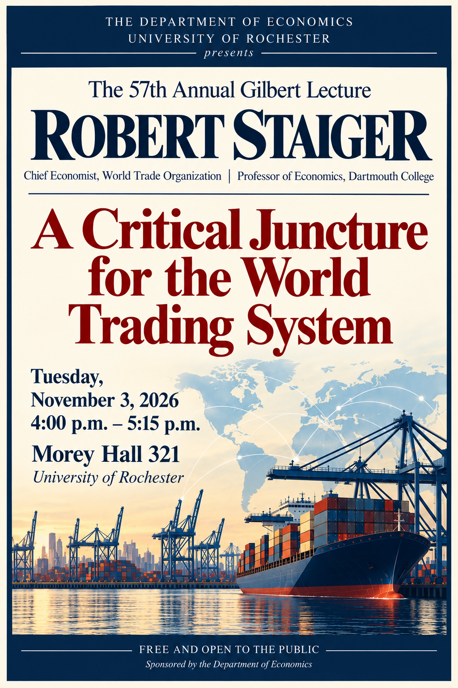
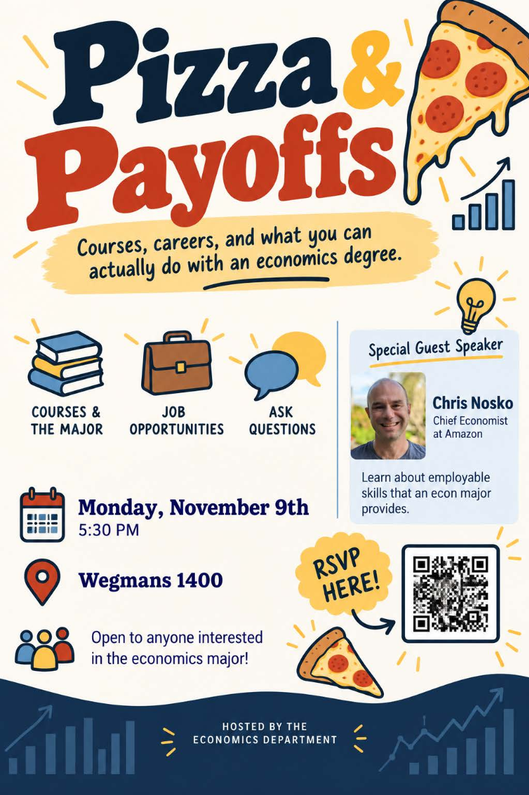
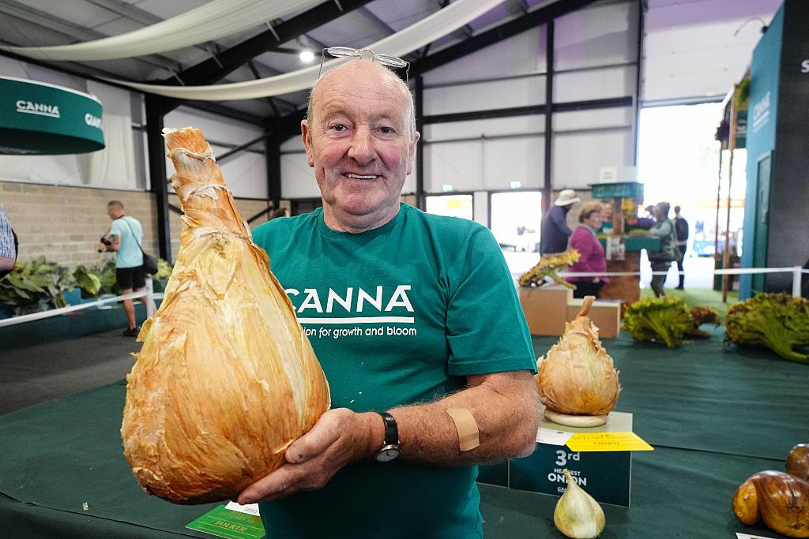
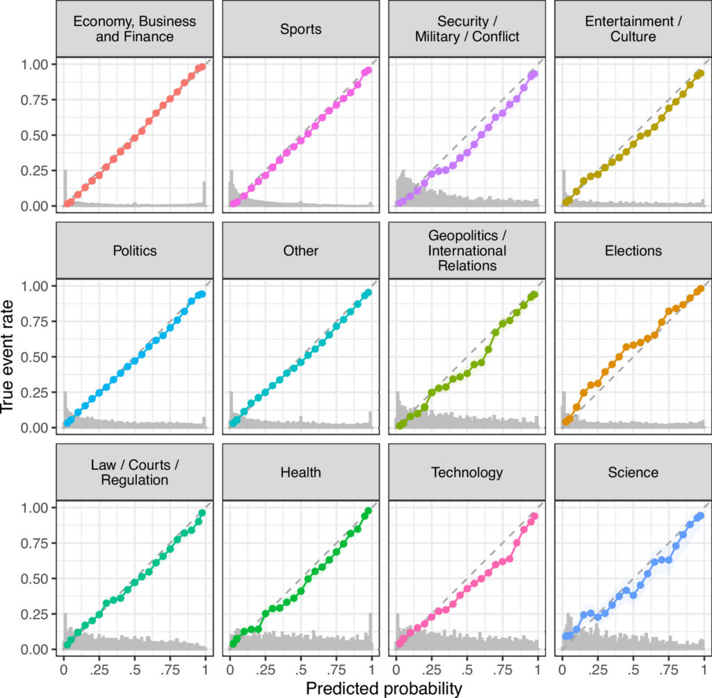
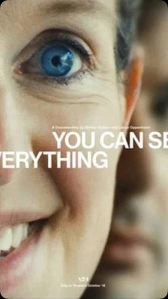

WEEKLY REMINDERS/ANNOUNCEMENTS – EWOT, Week 10
Readings and Topics this Week: We are continue on our basic principles journey by exploring margins, zero-sum thinking/pie-fallacy and lots and lots of unintended consequences. By Friday we aim to cover “Ethics and Morals in Commercial Society” before we move onto the next major section of the course. Described by many economists as the “Simplest Idea No One Understands” we will cover the economics of trade and comparative advantage after our ethics discussions.
Recitation: There will NOT be any formal recitation this week. Please be on the lookout for emails from the various TAs about how they will make use of that time.
Weekly AssignmentS: Your week 9 assignments are due Sunday. If you care at all about the financial position of the US government, and want to engage in serious discussions about where the risks and opportunities are, you definitely should do this one. We stopped short of a full-blown future analysis of the risks that Medicare and Social Security pose on the budget, or how “Medicare for All” is a pipe dream, but you now have a starting point.
Week 10 homework is due the Sunday after the exam. You will be listening to some podcast material and illustrating the flinging of bullsh!t, and more.
Exam: Please see the Blackboard Website and the Course Syllabus for Complete Information, including what to do if there is a conflict. Talk to Katherine if you have questions.
The exam will be given in Hoyt Auditorium from 2:00pm to 5:00pm on Friday the 6th.
We DO HAVE CLASSES on the day of the exam.
The exam is closed everything. Bring only a pen.
Make sure you have your Student ID on you, you will not be permitted to turn the exam in without it.
Make sure you know the name of your recitation TA.
The exam materials will cover everything I do through the final seconds of class this upcoming Wednesday, November 4th
I am not posting exam instructions. They are simply, “write down good economics based ONLY on what you have learned in class”
The exam is LONGER than the previous one, expect the reading and thinking to take up much of the allotted time.
Getting an extra hour of sleep, at the margin, is probably better for most of you than getting an extra hour of studying in, particularly as the week progresses.
A NOTE ON GRADING
A grade of a B is an excellent grade.
A grade of an A is an exam where we would say, “Professor Rizzo needs to see this, and this student would do a great job explaining this to the general public.”
We are NOT going to grade each question of the exam by adding/subtracting/tallying points. We have done this for 18 years and I believe this is more, not less, challenging for consistency and seriousness and subject worse to the knowledge problem we are teaching about.
We are grading the OVERALL quality of your thinking over the entire course of the exam. Economics is the EWOT and not a collection of “correct”answers.
A student who demonstrates they not just come to class, but can deploy sophisticated counterfactual reasoning and the art of comparing things, the role of institutions and culture in development, etc across ten questions may understand economics substantially better than a student who accumulates points by reproducing isolated concepts or by rote writing down what we say in class. The EWOT requires you to go beyond that.
Here is an example. After I kicked down the door and talked about the stupidity of silver lining thinking when presenting the broken window fallacy, an engaged classmate of yours emailed me:
“Earlier this week, you discussed how in capitalist markets, you get lots of destruction, but you also get lots of innovation, and the innovation always beats out the destruction.
In the context of today's lecture, regarding the silver lining, wouldn't the sentiment that even though there's destruction we also have innovation contradict that? I understand that of course it would be better to have the innovation without the destruction, but then are we approaching markets with a silver lining mindset?
I also understand the destruction/innovation point to be moreso a commentary on why markets are better than central planning, rather than saying that markets are perfect, but I'm curious about how these two discussions apply to one another.”
Now, I corrected him about the term “always” but do you see how this student digested our lesson, extracted the core operating mechanism, then thought about its implications for other things we have contested and argued, and asked a fantastically good question that in itself is an excellent teaching moment? That is what an A student, and an A level of engagement looks like.
And so, I believe point systems make you believe that “if you just wrote X, or did not write Y,” that you deserve a different grade. That is not economics. Suppose one student provides ten technically acceptable but shallow answers. Another writes eight extraordinary answers that integrate ideas across the course but struggles with two questions. Should the first student necessarily receive the higher grade? I don't think so.
We want students to make connections, and if they make a fantastic insight in Question 8 that also demonstrates they understand Question 2, by grading with points and by singular questions, we lose the chance to recognize that.
In other words, when we grade holistically we are much better able to ascertain whether a student has really understood economic versus just doing some performative economics.
So, all of the questions matter, but not in a rote way. To give yourself a feel for it, consider the following guidelines
| A range | Exceptional economic reasoning. Demonstrates genuine understanding, makes insightful connections across questions, and applies ideas independently. We trust them to teach and explain, IN GOOD FAITH, the economics, the challenges to the ideas, and the responses to those challenges. |
| B range | Clearly understands the central ideas and can apply them, but with less depth, originality, or consistency. Checks the boxes. We trust you to repeat ideas back, perhaps clearly, but not be able to go deeper. Our expectation is that this is a “very good” performance. |
| C range | Demonstrates partial understanding. Some sound economic thinking, but substantial gaps, superficial explanations, or recurring mistakes. |
| D range | Minimal evidence of meaningful understanding despite some engagement with the questions. |
| E | Little or no demonstrated understanding of the course material. |
TA Office Hours: Look for an announcement from Katherine!
My Availability
I will not be available until Monday morning. Call Alexa or Katherine if there is a serious issue, and they will route communication to me. Feel free during the week to call or text.
Check out Rochester events, office hour times and locations, department information, and up to date news and job opportunities (as they come to me) visit us at tiny.cc/RizzoHours. I update my calendar weekly on that page, and include other sometimes useful information on it for you.
This Week at Rochester
https://rochesterrizzo.github.io/Rizzo-Hours/this-week-at-rochester/
STAFF PICKS: Seven reasons to get out this week.
Thursday · Make: Blender Pumpkin Workshop
1 PM · Studio X. Seasonal 3D design in Carlson Library.
Friday · Pitch: The Heist Hackathon Finals
2 PM · Schlegel 107. AI-and-entrepreneurship teams compete for the Master Key.
Saturday · Home stand: Field hockey and UAA soccer doubleheader
10 AM field hockey; 1 PM men’s soccer; 3:30 PM women’s soccer · Fauver Stadium.
Sunday · River Campus music: Jazz Ensemble Concert
7 PM · Upper Strong · Free.
Wednesday · Words and music: Leonard Cohen Meets Rumi
6 PM · Interfaith Chapel.
Thursday · Home finale: Women’s Volleyball vs. Utica
7 PM · Louis Alexander Palestra.
Upcoming Special Events
Department of Economics Annual GILBERT LECTURE (walk around Harkness to see a little bit of its history)*

Title: A Critical Juncture for the World Trading System
Who: Robert Staiger, Chief Economist of the World Trade Organization
Date: Tuesday, November 3rd
Time: 4:00pm to 5:15pm
Location: Morey 321
More Info: Learn more about Professor Staiger here.
THE GILBERT LECTURE
The Donald W. Gilbert Memorial Lecture is one of the great traditions of the University of Rochester Department of Economics.
Donald W. Gilbert was deeply tied to both the University and the city of Rochester. A Rochester native and East High graduate, he entered the University in 1917, graduated in 1921, earned a master’s degree in economics at Rochester, studied at Harvard, and then spent nearly his entire professional life at UR. He rose from instructor to professor and chair of Economics, became dean of graduate studies, and in 1948 became the University of Rochester’s first provost. During his leadership of graduate education, Rochester was admitted in 1941 to the Association of American Universities, then a very small group of the leading research universities in the United States and Canada.
Gilbert also believed strongly that economics should reach beyond the classroom and seminar room. He helped create the University of Rochester Management Clinics, which connected the University with dozens of Rochester businesses and industrial organizations, and he was heavily involved in civic and public-policy life. When he died in 1957, at only 57, President Cornelis de Kiewiet described him as one of the University’s most important links to the Rochester community.
After Gilbert’s death, his friends, colleagues, alumni, and former students established a memorial lecture in his honor. The goal was entirely consistent with Gilbert’s career: bring serious economics to bear on the difficult practical and policy problems of the day.
The first Gilbert Lecture was delivered on April 30, 1959, by the great public-finance economist Richard Musgrave, speaking on the federal budget and the American economy. What followed was an extraordinary run of speakers. In the first decade alone, the series included Paul Samuelson, Milton Friedman, Kenneth Boulding, Wassily Leontief, Robert Solow, and James Tobin.
Over the following decades, Gilbert lecturers have included many of the most important economists of the modern era: Kenneth Arrow, Arthur Lewis, George Stigler, Franco Modigliani, Gary Becker, Robert Fogel, Thomas Schelling, James Heckman, Vernon Smith, Peter Diamond, Richard Thaler, Michael Kremer, Paul Romer, and many others.
Remarkably, 18 Gilbert lecturers later received the Nobel Prize in Economics.
Just as important as the names are the subjects they came to Rochester to discuss: unemployment, inflation, economic growth, population, pollution, regulation, Social Security, technological change, development, financial crises, education, health care, inequality, international trade, and the institutions that shape economic life.
The Gilbert Lecture is not simply a celebration of famous economists. It promotes the particular idea about that Rochester economics takes the tools of the discipline and aims them at the world outside the classroom.
One final Rochester detail: Gilbert Hall is named for the same Donald W. Gilbert, another reminder of how significant he was to the development of the University.
The Politics and Markets Project, Moderated Panel Discussion Hosted by Professor David Primo
Title: AI and privacy (both thinking about government regulation and things like surveillance pricing, or, getting good deals!)
Date: Wednesday, November 4th
Time: 7:30pm to 8:30pm
Location: Wegmans Hall, 1400.
More Info on the PMP: Follow on Instagram

Department of Economics PIZZA and PAYOFFS Special Event
Title: Pizza and Payoffs: Everything you wanted to know about the Econ major — courses, careers, and what you can actually do with an economics degree.
Who: Professor Lisa Kahn and special guest Chris Nosko
Date: Monday, November 9
Time: 5:30pm to 7:00pm
Location: Wegmans 1400
More Info: Chris Nosko is the head economist for Amazon! Very short department information session and lots of time for Q&A and discussions with Nosko and our department faculty.

Some Spooky Items that Caught Our Attention
AI Griefbots: Should AI be allowed to resurrect the dead?
Seances in the Red Room: Ordinary Americans were not the only ones to turn to spiritualism as a coping mechanism during the Civil War. In fact, First Lady Mary Lincoln, the wife of President Abraham Lincoln, practiced spiritualism in the White House. Mrs. Lincoln was born into a wealthy, Protestant family from Kentucky in 1818. Throughout her life, she suffered an immense amount of loss including her mother at a young age, three out of four of her children, and the brutal assassination of her husband before her very eyes. She first turned to spiritualism as a tool for processing her grief after the death of her second youngest son, William or "Willie", in February 1862. According to a newspaper article published the day after Willie’s death, “His sickness, an intermittent fever assuming a typhoid character, has caused anxiety and alarm to his family and friends for a week past … The President has been by his side much of the time, scarcely taking rest for ten days past.” Willie was only eleven years old at the time of his passing, a victim of typhoid fever.
1 in 3 college students think speech should be met with violence. Have a nice day.
Vampire Finches studied by Local Ornithologist Professor Dan Baldassare: “in most cases, the finches seem to inflict just enough damage to break the skin and extract some blood, but not too much to harm the boobies significantly.” This is similar to many parasite-host relationships, such as fleas, ticks, and mosquitoes on mammals. “You can kind of think of the vampire finches as giant mosquitoes,” Baldassarre says.
This Week’s Sign of the Apocalypse: A Zoom meeting for cats, they call it a meowting.
“Halloween-themed haunted houses gained popularity during the Great Depression when communities searched for ways to rein in the holiday’s increasingly destructive pranks … The destruction continued getting worse, reaching a peak on Oct. 31, 1933, when teenagers across the country reportedly overturned cars, sawed down telephone poles and damaged property in a night of disorder that became known as “Black Halloween””
Witchy for Woo Woo: 19% of Gen Z paid for a spell or love ritual through platforms such as Etsy or TikTok, compared with 16% of Millennials, 6% of Gen X and 2% of Boomers
Find the Best Places to Trick or Treat. How come we don’t protest Hershey’s for influencing us and poisoning us like oil companies? After all candy kills more people than climate change, and oil literally keeps the world alive?
Living in a Ghost Town: The Geography of Depopulation and Aging
We No Longer Have to Work for Our Candy: “Halloween in 1926 was actually more trick than treat; pranks were a huge part of the holiday. Mischievous children and teens would steal property, hit people with sacks of flour, and put odd objects on neighbors' roofs, all while wearing Halloween masks. The vandalism got so out of hand that some municipalities considered cancelling Halloween events altogether.”
Fella’s Got Some HUGE Onions: scariest hugest onions, squashes and pumpkins ever created.

Running your LLM Through a Torture Chamber? “Drawing on a recent study published in arXiv, which concluded that “LLMs sometimes behave in ways resembling human emotional responses” including fear and sadness, a GitHub user recently created what’s being dubbed an “AI torture chamber” to intentionally steer models into these states of apparent distress. Through activation steering, this user was able to prompt AI models to describe their state of agony with such emo teenager phrases as “I’m drowning in a sea of shadows,” sparking fury from other GitHub users who mass-reported the project, calling it “sadistic.” Others pointed out, however, that despite what your local polycule may claim, AI models aren’t actually conscious, and describing an emotion isn’t the same as actually feeling it, but perhaps two things can be true: should we stop sympathizing with non-sentient AI before millions of agents are given voting rights? Yes. But should anyone who delights in ‘torturing’ robots still be put on a watch list? Also yes.”
We Tell Children Nasty Stories, But Show Them Pretty Pictures
Can an AI Really Bioengineer a Civilizationally Horrific Virus? (As always, ask, where are the bottlenecks) Look, we have already allowed human beings to do it in all manner of areas, what’s the big deal?
The Real Story of the Witches of New England – The Truth Shall Not Set You Free: Unfortunately, each of these fundamentalist groups believed they had a monopoly on truth. It was all too easy to see competitor churches and anomalous people as heretical, even demonic. What if even the slightest error in doctrine or practice allowed the devil to mislead and damn well-meaning Christians? And what if, having been shown the error of their ways, the unorthodox individuals refused to change? Then it became permissible to attack them, firstly with harsh words but then resorting to physical repression. At the sectarian level, Baptists ridiculed Quakers, Presbyterians oppressed Anabaptists. And at the personal level, many people suffered painfully for their beliefs.
Ghosts are Rational: “This paper provides research to show that ghosts are indeed rational actors and, as such, refrain from the practice of killing living entities. The paper concludes by discussing the impact that this result could have on the housing market”
Facts About Ghosting: “13–23% of adults have been ghosted by a romantic partner. Add in friends, and we’re talking 72% of people reporting they’ve been ghosted at least once. 20–40% have either been ghosted or done the ghosting.” More here. Should there be a tax on ghosting? Solve for that equilibrium.
Tricked: Living standards during wars were worse than the data tell us.
The Devil’s Path (in the Catskills) makes the list of America’s Most Haunted Hikes
WitchTok and Winemaking: “Future 40 Tastemaker Nancy Ulloa, the self-described “wine witch” behind Ulloa Cellars, infuses her bottlings with “metaphysical and spiritual methods.” She gives offerings to the vineyards prior to harvesting her grapes. She uses crystals and recites affirmations during the fermentation and aging process.”
In rural villages, broomsticks were also often used as a form of signage by alewives, who would place them outside their cottages to show that ale was for sale within. Somehow, this innocuous object found its way into stories of witchcraft.
First There Was Al Capone, then the Cubs, Now … “Where are all these pumpkins coming from? From right here in Illinois, which grows far more pumpkins than any other state, and it’s not even close. In a recent year, Illinois grew 634 million pounds of pumpkins, making it a $200 million industry in the state. In second place? Indiana, with 161 million pounds.
“We are not only No. 1 in production, we are about three times as big as those other states,” says Mohammed Babadoost, a plant pathology professor at the University of Illinois, and the state’s leading pumpkin expert. “We are truly the pumpkin state.”
In the 80s it was razor blades … today? “A police department in Michigan issued a warning to community members after uncovering counterfeit candy and snacks containing THC and hallucinogenic mushroom products while executing a search warrant at a local residence.”
Haunted (Affordable) House: “Despite its name, it’s often not particularly affordable to build: California affordable housing costs 1.5x as much to build as market-rate housing. Partly this is because of the various hoops the government requires affordable housing developers to jump through. In Chicago, apparently developers are required to provide records showing if they’ve ever “invested in or profited from slavery”
We May Love Pumpkins Now. A history of the Pumpkin in the US … “"It really did not take long for it to develop this figurative use," she says, adding that by 1680, pumpkin was "applied contemptuously to a person who's a bit conceited or self-important or stupid."
Are You a Dark Coper? “The third, "Dark Copers", saw it as a way of dealing with real life. They reported watching horror films to explore how violent the world is, for instance, and to remind themselves of how safe their own lives were in comparison to the gore on screen. Some even saw the onscreen action as a way of managing their anxiety or depression. It was a way of testing their bravery.“ More on the paradox of horror films.
The key question is not whether you’d buy one, but whether you’d get it at a premium or a discount! Americans would consider buying a haunted house.
Dress Up as a Knight > Dressing Up as a Samurai?
“Reports of demonic possession were popular. Before his ascension to the English throne, King James VI of Scotland published a literary treatise on demonology in 1597. He argues that “assaultes of Sathan are most certainly practized” and “detestable slaves of the Devill” live among us. Demon vs. Ghosts.
Do 55% of Your Calories Really Come from Ultra Processed Foods?
Not Playing Dress Up (or as MR would say, “Those New Service Sector Jobs, but not quite”): “Giles has cleaned in rooms containing skeletons in beds and armchairs, skeletons wearing leather belts, leather shoes, all that remains of someone’s clothing after a decade or more of undisturbed decay. He has dug out hoarders who’ve accidentally interred themselves, dying like pharaohs inside mausoleums of boxes, videotapes, magazines. He once collected hundreds of used needles from an abandoned train depot in Bath. Towards the end of that job, working in the dark, one of his colleagues disturbed an addict, who promptly added another needle to the total before wandering off. When a truck driver misjudged a hill in Devon, Giles’s office got the call to pick up hundreds of oily, slippery pig skins from the road.”
How do we handle the data of the deceased?
Unlike nihilism, with which cosmicism shares some similarities, the focus is on how small and incidental humanity is. Lovecraft’s characters are often placed in situations where they come face-to-face with the cold, uncaring vastness of the Universe, their inability to affect change in any meaningful way, or aliens so bizarre that their minds cannot comprehend them or integrate them into a coherent worldview.
“I Got ADHD in my Bag”: The practice of medicine relies on accurate diagnosis. However, the diagnosis of many medical conditions involves assessments that invite varying degrees of subjectivity. External and arbitrary factors can influence physicians’ diagnostic assessments in conditions ranging from heart attacks to neurodevelopmental conditions like attention deficit hyperactivity disorder (ADHD). Quantifying this subjectivity is challenging, however, particularly for neurodevelopmental and psychiatric conditions where subjective assessments of behavior are common and important. Halloween, a holiday characterized by excitement among children, could present a natural experiment to study subjectivity in diagnosis, if any ensuing behavioral changes influence diagnosis rates of ADHD. Using data on over 100 million physician office visits, we compared ADHD diagnosis rates, by day, among children seen by physicians in the 10 weekdays surrounding seven Halloween holidays. The rate of new ADHD dia! gnosis was 62.7 per 10,000 child-visits on Halloween, compared with 55.1 during surrounding weekdays, a 14% increase. There were no increases in diagnoses of several neuropsychiatric disorders with diagnostic criteria that are less focused on hyperactive behavior. Our findings highlight subjectivity in ADHD diagnosis and support the need to consider external factors that may influence diagnosis
Outfoxed, Rambo Edition: “Until then, eradicating predators in an enclosed area, while difficult, was a standard process. But Rambo was not a standard fox. It’s believed he became incredibly wary after losing his mother to a trap and his sibling to poison bait. Over four and a half years, he evaded 10,400 traps, 3,500 poison baits, 73 stakeouts, and 55 days of scent-tracking dogs. This was more than just an animal’s struggle for survival; it was a victory of wits and instinct over technology. Rambo’s impact was much bigger than just his own survival. This single fox single-handedly delayed a multi-million dollar conservation project for years. Because of him, scientists had to change their plans and create a smaller, second safe zone inside the main area. He wasn’t just a predator; he had become a strategist dictating the project’s terms.”
* * * * *
WINTERCOW’S MOOING: Crabpotism and Antisocial Punishment. Creepy voice podcast here; Need some time to make it sound better, suggestions welcome.
CHART(S) OF THE WEEK: AI Superforecasting. “Using approximately one million resolved contracts and questions across four collective forecasting platforms, twelve domains, and time horizons ranging from hours to years, we evaluate the calibration and accuracy of collective forecasts in real-world settings. We found that forecast probabilities were overall highly calibrated: events assigned a probability of p% occurred approximately p% of the time. This broad pattern was evident across platforms and many domains, although fine-grained analyses revealed systematic tendencies toward over- or underestimation in highly consequential areas. While this does not mean that forecasting platforms provide certainty about individual events, our findings suggest that large-scale aggregation of judgments contains meaningful information about real-world uncertainty; when examined in aggregate, the predictions generated by the platforms provided informative estimates of event likelihood.

PHOTO OF THE WEEK: Quoth the Raven in Mendon Ponds Park. “The intelligent and sociable Common Raven has been the subject of mythology, folklore, and literature through the ages. Different Indigenous American cultures variously portray the raven as a sly trickster, a guide and helper to humans, or a culture hero that helped create the world. Many European cultures associate the raven with death and doom, likely stemming from a very real association with ravens scavenging from carcasses on the battlefield and those who died during the Black Plague. Swedish folktales depict ravens as the ghosts of those who have been murdered, and old German stories describe ravens as the souls of the damned.
Ravens are also renowned for their intelligence. Their brains are among the largest of any bird species, and they display excellent problem-solving ability. Biologist Bernd Heinrich, known for his studies of raven behavior, argues that the raven is one of only four known animals (along with bees, ants, and humans) that demonstrate "displacement."
VIDEO/DOCUMENTARY/BOOK/CARTOON, ETC OF THE WEEK: You Can See Everything
Caught the new compelling Elizabeth Holmes documentary. Everyone says it is incredible. I think the documentarian himself is almost as interesting as the characters he is illustrating. It is not at all clear from the film what you are able to or suppsed to believe. One economic question: should Holmes spend 11 years in prison, even if guilty? Remember the opportunity costs.

* * *QUOTE, Reflections on Hume* * *
Religious fanaticism transforms the worst impulses of human beings into sacred obligations, deprives ordinary morality of its authority to restrain them, and then rewards the people most skillful at intensifying the resulting hatred.
The fanatic does not merely believe that he is right. He believes that his certainty comes from an authority above human reason, human sympathy, human law, and human experience.
And once that happens, the very things that make civilization possible—compromise, intellectual humility, toleration, reciprocity, the ability to disagree without seeking domination—become signs of weakness or wickedness.
Hume understood this extraordinarily well.
1. Hume's astonishingly prescient account of religious fanaticism
In Of Superstition and Enthusiasm (1741), Hume describes what happens when someone becomes convinced he has a privileged relationship with divine authority:
"Human reason, and even morality are rejected as fallacious guides"
And he writes that the fanatic develops:
"a contempt for the common rules of reason, morality, and prudence."
Those are the crucial passages.
Hume's insight is that fanaticism is not simply an excess of moral conviction. It is the destruction of the ordinary mechanisms by which moral convictions are tested, corrected, and restrained.
Consider what this means for jihadist ideology.
A movement claiming divine authority to execute apostates, murder heretics, enslave religious minorities, subordinate women, and wage holy war is not simply expressing an unusually intense preference for religious observance.
It is asserting that certain human beings possess the authority to suspend the ordinary moral constraints that bind everyone else.
And the more thoroughly they believe this, the less accessible they become to arguments about suffering, freedom, proportionality, or consent.
Their certainty is not a defense against cruelty. It becomes a mechanism for producing cruelty.
Hume's even more important insight: the market for religious extremism
Here is the extraordinary passage from Hume's History of England, Chapter 29, in his discussion of ecclesiastical establishments:
"Each ghostly practitioner ... will inspire them with the most violent abhorrence of all other sects"
He continues:
"No regard will be paid to truth, morals, or decency in the doctrines inculcated."
And concludes that the state's most advantageous bargain with the clergy is:
"to bribe their indolence"
Hume recognizes that ordinary competition rewards producers for satisfying their customers. But competition among religious entrepreneurs can also reward the production of fanaticism.
When religious authorities compete for adherents, prestige, money, and influence, they may distinguish themselves by offering increasingly uncompromising versions of divine truth.
Moderation becomes a competitive disadvantage. Toleration becomes evidence of insufficient faith. Cruelty can become a demonstration of commitment.
The aspiring fanatic competes not by being more reasonable but by appearing more authentically obedient to God.
Hume saw how an ordinary incentive mechanism could generate an extraordinary moral catastrophe.
3. What Hume would recognize in the Islamic State, al-Qaeda, and the Taliban
There are at least three particularly horrifying features of contemporary jihadism that fit Hume's analysis.
First, the replacement of human judgment with purportedly infallible divine commands.
The Islamic State didn't merely murder Yazidis and enslave women. It developed religious justifications for doing so, drawing selectively on Islamic scripture and jurisprudence to present slavery as religiously legitimate. This was not a secular political movement disguising ordinary crimes in religious language. Its theological claims were part of the machinery that organized and justified those crimes.
Second, the competition to demonstrate superior religious purity.
The Islamic State took the practice of takfir—declaring other Muslims apostates—to extraordinary extremes. It competed with al-Qaeda over religious legitimacy, including who was sufficiently uncompromising and who could rightfully be killed.
Hassan Hassan's research for the Carnegie Endowment documents how these theological disputes became mechanisms of sectarian violence and organizational competition.
Hume would immediately recognize the incentive: the faction that persuades its followers that everyone else is insufficiently faithful acquires a powerful instrument of social control.
Third, the transformation of ordinary human existence into something subject to religious permission.
Look at Afghanistan.
As of 2026, the Taliban have excluded girls from education beyond sixth grade, restricted women's employment and movement, subjected people to public corporal punishment, and imposed religiously discriminatory laws. Their January 2026 criminal procedure code further entrenched their preferred interpretation of Islamic jurisprudence.
This is not simply a government with unusually conservative social preferences. It is an institution claiming authority over the ordinary freedoms of other human beings because its religious interpretation supposedly supersedes their independent judgment.
From a Humean standpoint, it represents a catastrophic inversion of political authority.
Instead of government existing to secure the conditions under which human beings may flourish, human beings exist to satisfy the government's conception of divine requirements.
And that is precisely what makes theocracy so dangerous: there is no ordinary human authority to which its claims must answer.
Note #1: Adam Smith Disagreed on competition
Note #2: Replace “religious extremism” with a political malady of today, such as the decline of reason and the legitimacy of scientific method as tools of the oppressor class, and think about how it all sounds